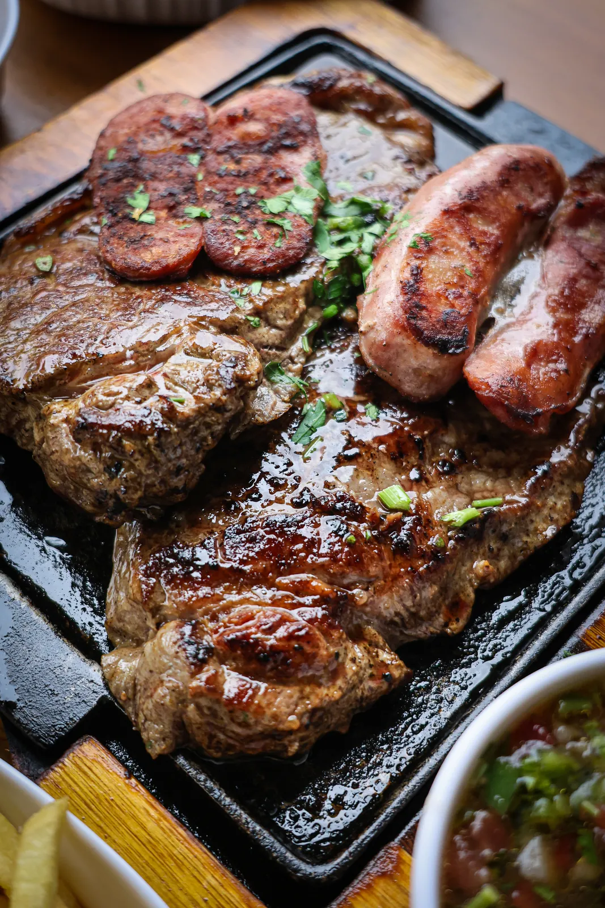
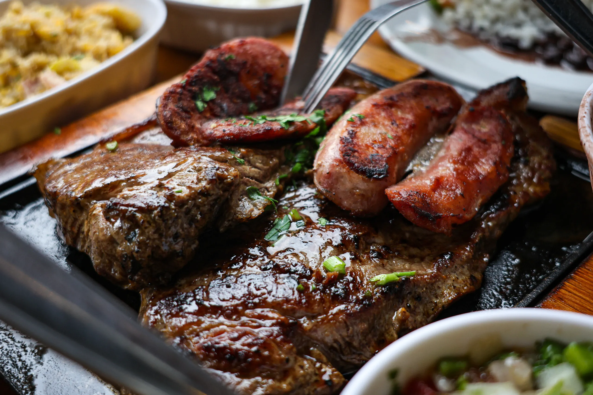
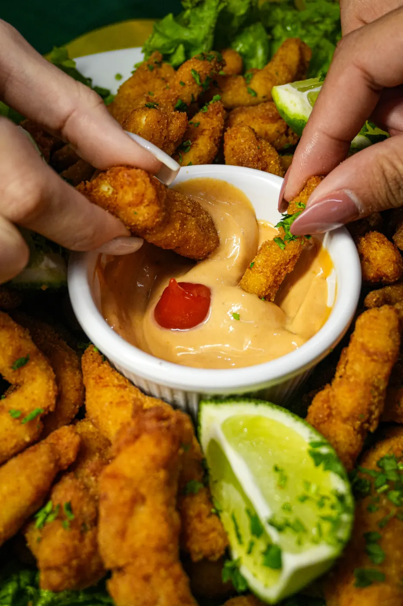
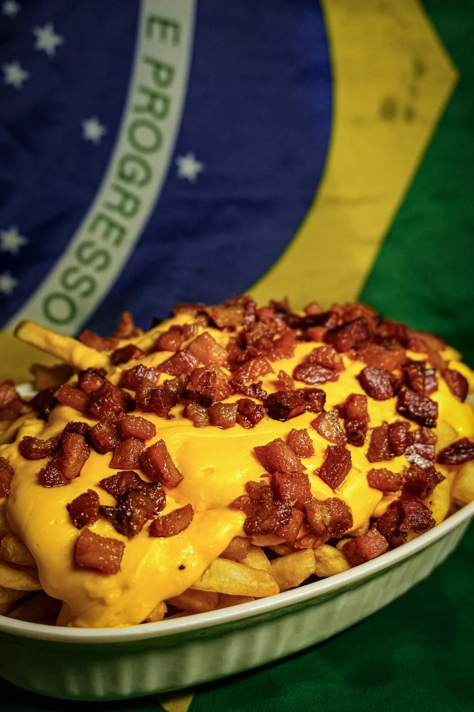
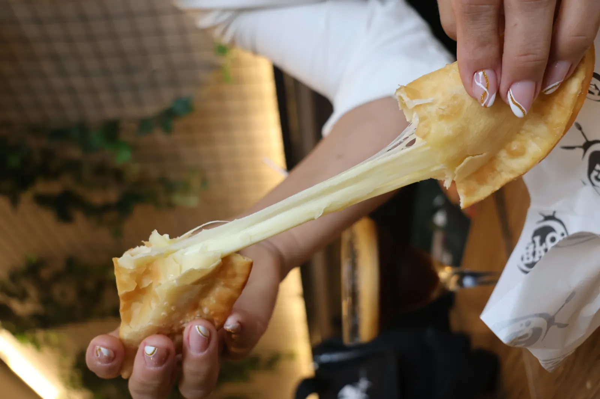
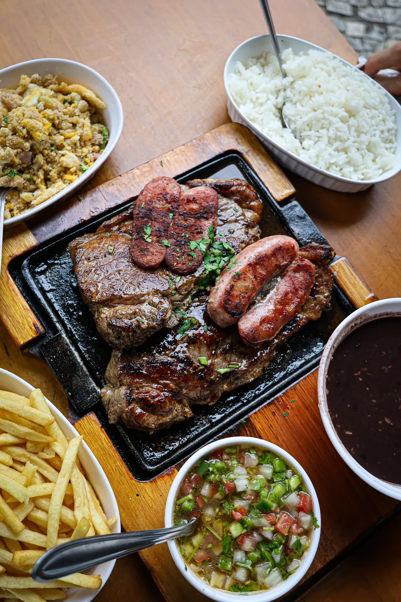
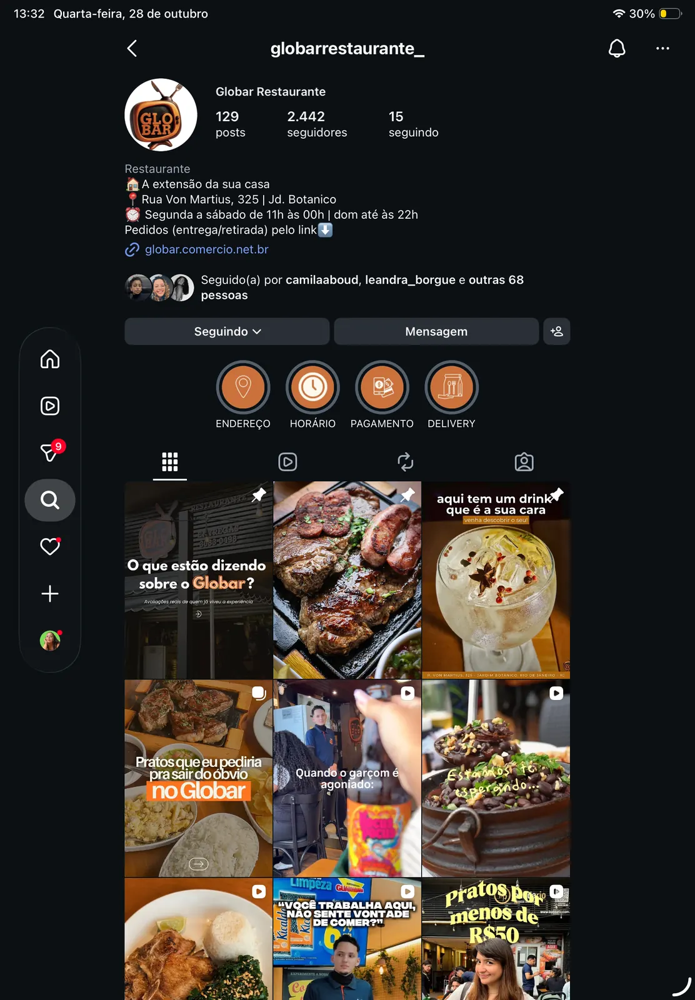

globar
restaurante · jardim botânico, rj
“a extensão da sua casa.”
agora também no feed.
prato por prato
cardápio fotografado com luz, ângulo e cor que dão fome.





luz, ângulo e cor pensados prato por prato.
foto parada não basta.
vídeo que segura o dedo.
social media
um feed com cara de casa.
0Kvisualizações num post só
+0 milsalvamentos
endereçohoráriopagamentodelivery

próximo case
02 mostarda